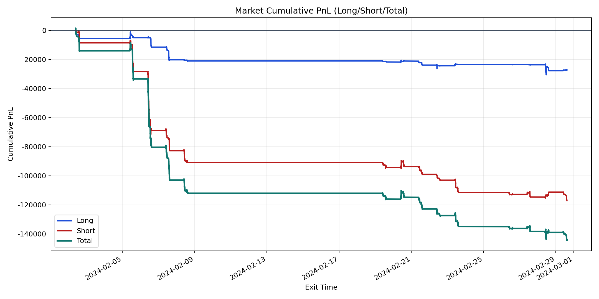
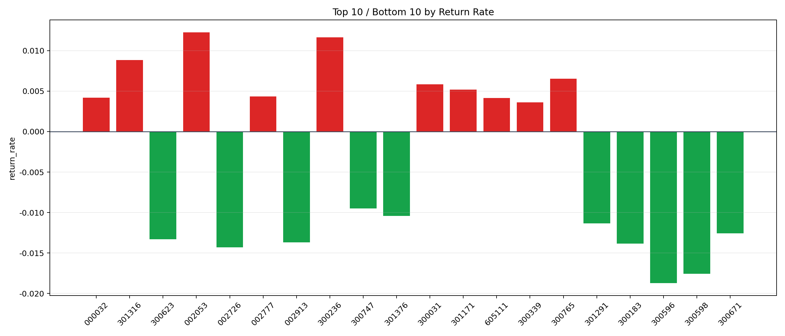

| repo_root | /home/haoranyou/data/output/alpha0.4_1w_5s_3ticks_index_filter/index_weights_1000 |
|---|---|
| period_months | 1 |
| period_label | 2024-02-02_to_2024-02-29 |
| start_time | 2024-02-02 09:51:07 |
| end_time | 2024-02-29 14:59:55 |
| n_trades | 10007 |
| n_symbols | 279 |
| total_pnl | -144329.81520000007 |
| long_total_pnl | -27184.86475 |
| short_total_pnl | -117144.95045000008 |
| total_entry_notional | 92948611.0 |
| long_entry_notional | 22162518.0 |
| short_entry_notional | 70786093.0 |
| total_return_rate | -0.001552791522618881 |
| long_return_rate | -0.0012266144465173136 |
| short_return_rate | -0.001654914764825346 |
| top_symbols_by_return | ["002053", "300236", "301316", "300765", "300031", "301171", "002777", "000032", "605111", "300339"] |
| bottom_symbols_by_return | ["300596", "300598", "002726", "300183", "002913", "300623", "300671", "301291", "301376", "300747"] |

